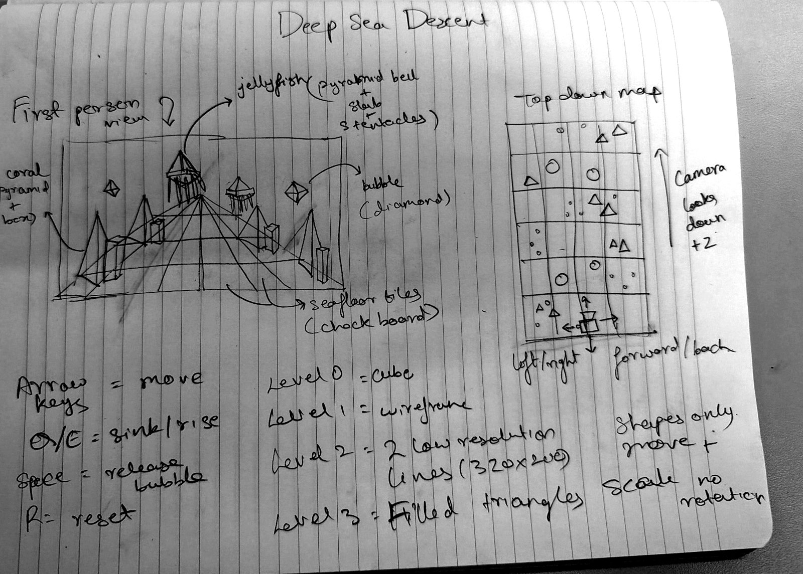
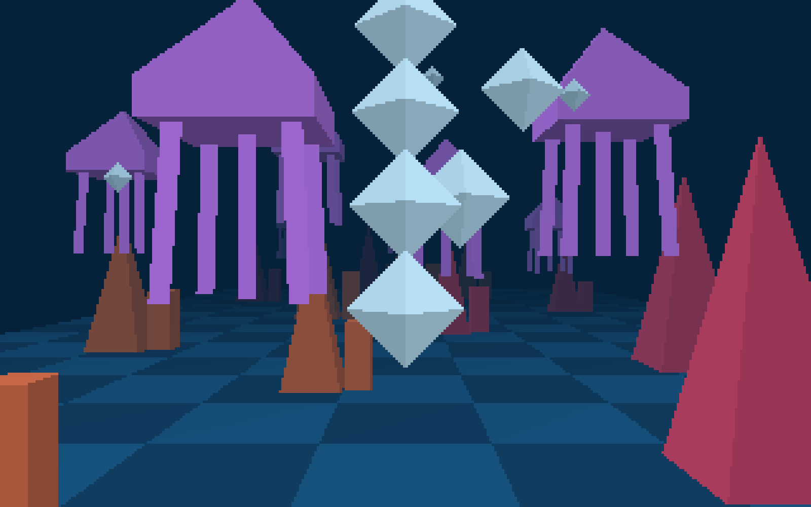
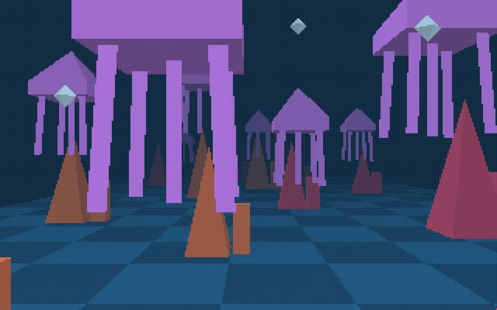
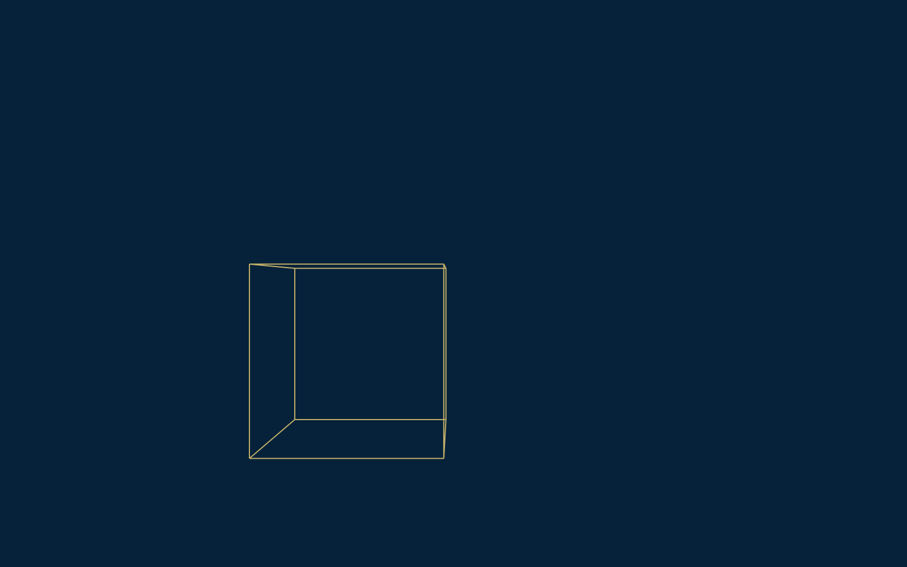
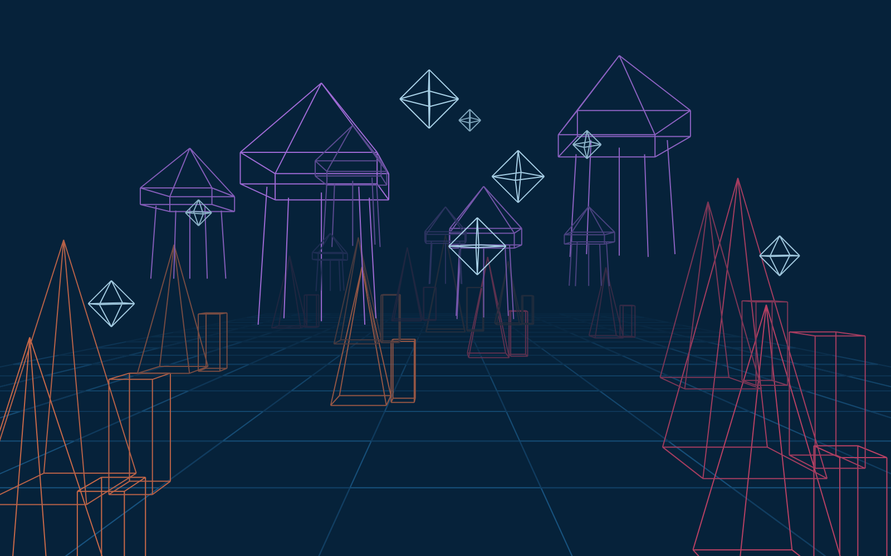
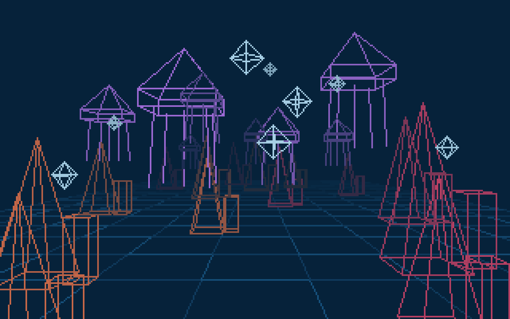
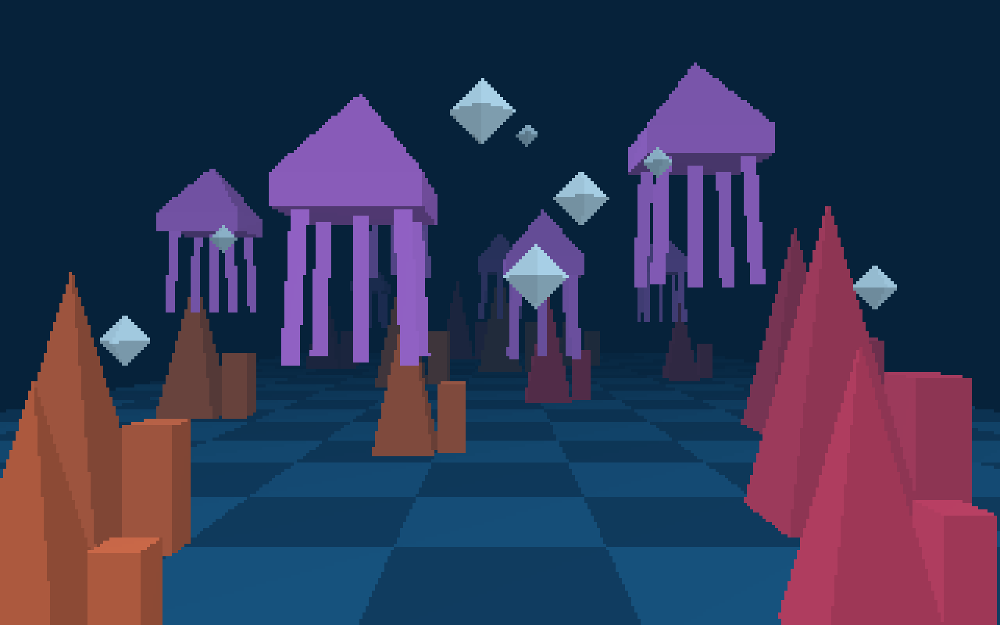

Deep-Sea Descent is a small underwater scene you can swim through. You glide past coral, jellyfish and bubbles on a checkerboard seafloor. Everything on screen is drawn by my own code on an HTML canvas, with no WebGL and no graphics libraries. The project has four levels, and each one adds a step of the graphics pipeline: from a plain wireframe to filled triangles on a mock 320 x 200 display.
I wanted a scene that felt calm and a bit mysterious, where the point is to drift around and look at things. An underwater world fit that well. It also worked with the project's rules: no rotation, simple shapes only, and a fixed camera that just slides around. Coral, jellyfish and bubbles can all be built from pyramids, boxes and diamonds, so the scene still reads as "underwater" even with blocky geometry.

Design sketch goes here| Key | What it does |
|---|---|
| ← → | Move the camera left / right |
| ↑ ↓ | Move forward / back |
| Q E | Sink / rise |
| Space | Release a bubble (hold it for a stream of bubbles) |
| R | Reset the camera and the whole scene |
| 0 1 2 3 | Switch levels (the buttons above the screen do the same thing) |
| G | Show or hide the pixel grid in levels 2 and 3 |
A few more things happen on their own:






Every frame goes through the same pipeline. Only the last step changes between levels.
model (vertices, edges, triangles)
│ scale it, then move it to its position (instance)
▼
world position
│ subtract the camera position
▼
camera-relative position (x, y, z)
│ u = x / z, v = y / z (pinhole camera)
▼
screen position
│
├─ Level 1 → canvas lines on 1600 x 1000
├─ Level 2 → my own line function → 320 x 200 pixel array
└─ Level 3 → triangle fill + depth buffer → 320 x 200 pixel array
│
▼
draw each pixel as a 5 x 5 square
Each object type is defined once, centered at the origin, as a list of vertices (3D points) and edges (pairs of vertex numbers to join with a line). For level 3, the same shapes also get a list of triangles (three vertex numbers each). For example, a box has 8 corners, 12 edges, and 12 triangles, since each of its 6 faces is split into 2 triangles.
To place objects in the scene, I make instances. Each instance stores which model it uses, a position vector, a scale factor and a color. To get a vertex's world position, I multiply the model vertex by the scale and then add the position. There's no rotation, only scaling and translation. That's how one coral model becomes 14 corals of different heights.
A pinhole camera sees things farther away as smaller. To fake that on a flat screen, I first move everything so the camera sits at (0, 0, 0) by subtracting the camera's position. Then I divide by depth: u = x / z and v = y / z. A point that's twice as far away ends up half as far from the center of the screen. Finally I stretch u and v to fit the canvas, and flip v, because canvas y counts downward.
function project(vertex, obj, screenW, screenH) {
const x = vertex[0] * obj.scale + obj.position[0] - camera.x;
const y = vertex[1] * obj.scale + obj.position[1] - camera.y;
const z = vertex[2] * obj.scale + obj.position[2] - camera.z;
if (z < NEAR) return null; // behind (or right on top of) the camera
const u = x / z;
const v = y / z;
...
return [screenX, screenY, z];
}Objects behind the camera: if z is tiny or negative, dividing by it would throw the point to the wrong side of the screen. So any vertex with z below 0.4 isn't projected. An edge or triangle that uses it is skipped. On top of that, the camera can't move into coral or jellyfish, and it's kept inside the scene's bounds.
The low-res display is a 2D array, pixelGrid[u][v], of 320 x 200 colors, all starting as the water color. A line on a grid of squares has to become a staircase of pixels. My drawLine uses the incremental method: start at one end, step one column at a time, add the slope to v each step, and round to the nearest row.
The basic version only works for lines going left to right with a gentle slope (between 0 and 1). The edges of 3D shapes go every which way, so I added two fixes:
v than in u, stepping by columns would leave gaps. So I step through rows instead and add the inverse slope to u.I also only loop over the part of a line that's on screen. Otherwise an edge with one end way off to the side could run thousands of useless steps. Once every edge is drawn into the array, I draw each pixel as a 5 x 5 square on the real canvas.
For level 3, each shape is drawn as filled triangles. Each face gets its own brightness, so you can tell the sides of a shape apart. For each triangle:
p in that box, I split the triangle into three smaller triangles that meet at p. Each small triangle's area divided by the whole triangle's area gives a weight: α, β, γ. They always add up to 1.depth = α·za + β·zb + γ·zc.Because of the depth buffer, the order I draw triangles in doesn't matter. A near coral always covers a far jellyfish, with no sorting needed. That's the main advantage over the painter's algorithm, which has to sort everything back to front and still breaks when triangles overlap in depth.
Each instance has a color. Every frame, that color is mixed toward the water color based on distance, so faraway objects fade into the dark. In level 3, each face's brightness value is applied first.
A walkthrough of all four levels and the controls, with my voiceover.
I used Claude (Anthropic) on this project, with my professor's permission, because I was submitting late after being away. I'm being upfront about how much it did:
project, drawLine and fillTriangle) until I could explain each one. I checked them against the course slides, and I worked the examples on this page by hand.